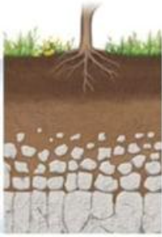

토양의 생성과정
바위가 풍화 작용을 오랫동안 받으면 토양(흙)이 된다
순서
1. 암석이 잘개 부서진다.
2. 모질물이 되어 더 빠르게 풍화 작용을 받아 부서진다.
3. 맨 윗쪽 표토에 식물이 자란다.
4. 비가 와 표토에서 물에 녹는 물질이 떠내려가 심토가 만들어진다.
토양의 모습

- 표토 : 식물이 자라는, 가장 윗층
- 심토 : 표토에서 물에 녹는 물질이 비와 함께 떠내려가 만들어진 층
- 모질물 : 암석이 잘게 부서져 생긴 층
- 기반암 : 제일 처음 암석. 가장 깊은 곳에 있다.
토양의 생성 과정
1. 기반암이 풍화 작용을 받아 모질물이 만들어진다.
2. 모질물이 풍화 작용을 더 받아 식물이 자랄 수 있는 표토가 만들어진다.
3. 다양한 식물이 자란다. 또, 비가 내리며 표토에 있는 물에 녹는 물질이 밑으로 떠내려가 심토가 된다.